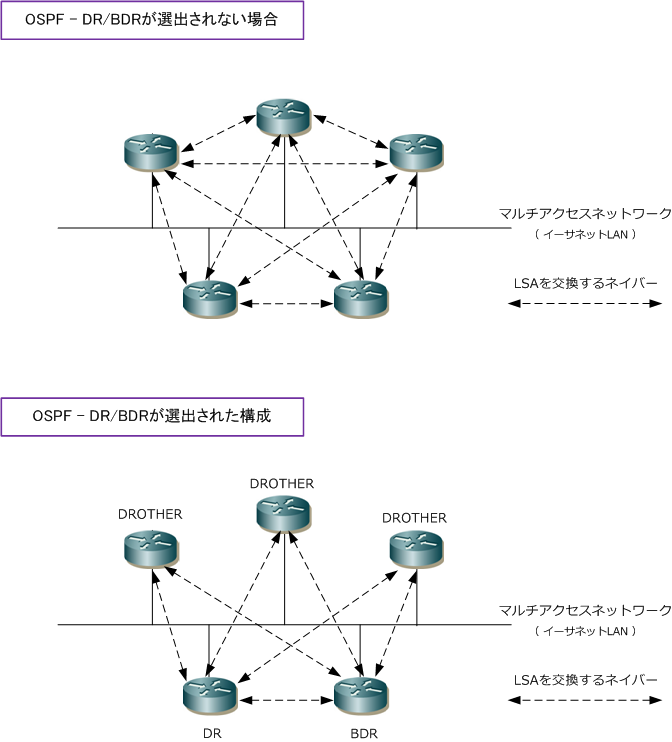
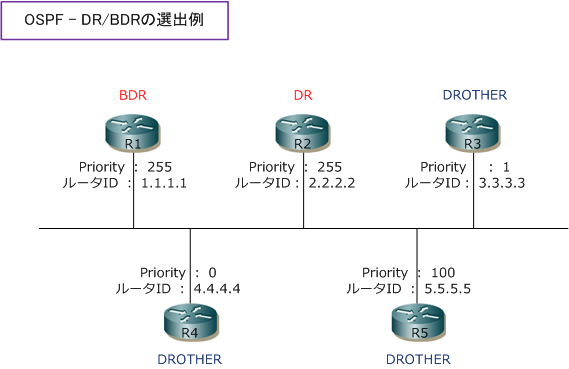
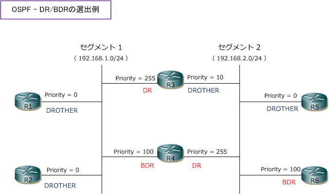
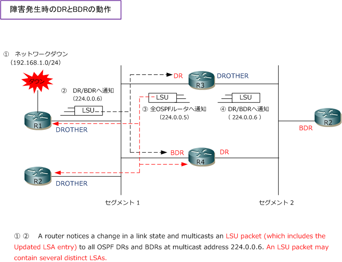
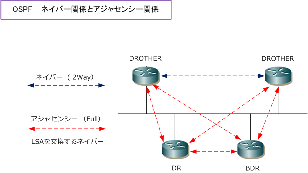

OSPF - DR / BDR / 2way
OSPF - DRとBDR
OSPFでは、イーサネットのようなマルチアクセスネットワークでDR (Designated Router) と呼ばれる 代表ルータと、BDR (Backup Designated Router) と呼ばれるバックアップ代表ルータが選出されます。 DR、BDRに選出されなかったOSPFルータはDROTHERと呼ばれます。LANごとにDRとBDRを選出して、 DR、BDRとだけの間でLSAを交換するようになることから LSA を交換するネイバールータを減らせます。

※ どのOSPFルータもネイバー関係は確立されますが、上図の通り、LSAを交換するネイバーはDRとBDRだけになります。
OSPF - DRとBDRの選出
DRとBDRの選出にはOSPFプライオリティ値が使用されます。OSPFプライオリティ値はHelloパケットに 含まれており、OSPFルータがHelloパケットを交換して2Way Stateになった後にDR/BDRが選出されます。 DRとBDRの選出はOSPFプライオリティ値が使用されます、その値が同じ場合にはルータIDを使用します。
① OSPFプライオリティ値が最も大きいルータがDRになる。 ② OSPFプライオリティ値が2番目に大きいルータがBDRになる。 ③ OSPFプライオリティ値が同じ場合、ルータIDが最も大きいルータがDR、２番目に大きいルータがBDR。
※ OSPFプライオリティ値はデフォルトで 1 です。なお、OSPFプライオリティ値が 0 のOSPFルータは必ずDROTHERになります。
下図の場合、R1とR2が最もプライオリティ値が高く同じ値ですが、R1とR2ではルータIDがR2の方が大きい のでR2がDRとなってR1がBDRとなります。DR/BDR選出後は、全てのOSPFルータはDROTHERとなります。

DRとBDRはセグメントごとに選出されます。OSPFプライオリティ値はインターフェースごとに設定するので あるOSPFルータはセグメント1ではDRとなっても、セグメント2ではDROTHERになっている場合もあります。

OSPF - DRとBDRの動作

| 項番 | 説明 |
|---|---|
| ① | R1 のインターフェースでネットワーク（192.168.1.0/24）にダウンが発生したことを検知。 |
| ② | R1 は、192.168.1.0/24 のLSAを更新したLSUを、セグメント1 のDR/BDRへマルチキャスト（224.0.0.6）で送信。 |
| ③ | LSUを受信したDR（R3）は、セグメント1 の全OSPFルータへマルチキャスト（224.0.0.5）で送信。 |
| ④ | このフラッディングされたLSAをエリア内に伝搬するために、R3 はセグメント2のDR/BDRへ（224.0.0.6）で送信。 |
④以降は同一エリアの範囲内で②～④の流れが繰り返されます。なお、②のLSUをセグメント１のBDRである R4が受信した後、Waitタイマーをセットした上で、DR（R3）からも同じLSUが送信されてくるのを待ちます。 このWaitタイマーが切れるまでにLSUを受信できない場合、DRがダウンしたと判断しBDRがDRへ昇格します。
OSPF - ネイバー関係、アジャセンシ―関係（ 用語のまとめ ）
OSPFの使用用語において、隣り合い接続するルータの関係のことを、近接接続、隣接接続、ネイバー接続、 アジャセンシと色々な呼び方をしたり、Full State、2Wayなどがありますが実際には2種類の概念だけです。 マルチアクセスネットワークでDR/BDR間とはアジャセンシーを確立し、DROTHER間ではネイバーを確立。

| OSPFルータ間の関係 | ステータス | 説明 |
|---|---|---|
| Neighbor（ネイバー） | 2Way | ただネイバー接続しているOSPFルータ同士の関係 |
| Adjacency（アジャセンシ―） | Full | LSAを交換し合うOSPFルータ同士の関係 |